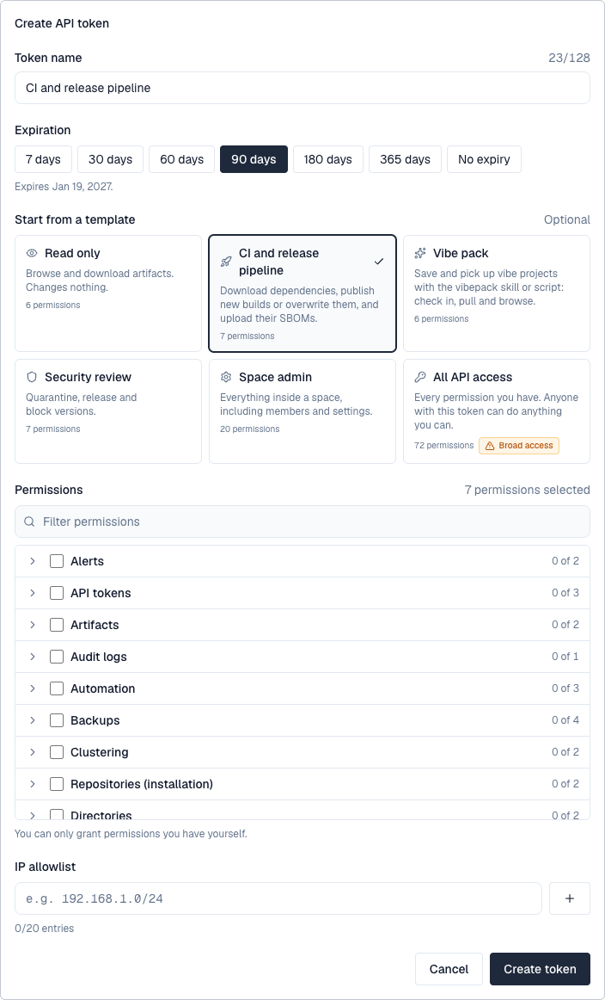

API tokens let scripts, package managers and integrations call Depotex without a browser session. Each token belongs to a person, carries a chosen set of their permissions, can expire, can be limited to some network addresses, and has its own rate limit. For applications acting for many people, see OAuth applications.

1. Create a token
- Open your API tokens — Open the profile menu (your initials, top right) and choose API tokens.
- Select New token — Above the list of your tokens. The form opens in place.
- Name it — Up to 128 characters, for example CI/CD pipeline.
- Choose when it expires — 7, 30, 60, 90, 180 or 365 days, or never; the form shows the date. An organization policy can set a shorter maximum.
- Optionally, start from a template — Read only, CI and release pipeline, Vibe pack (what the vibepack skill needs to check in and pull vibe projects), Security review, Space admin or All API access (marked *Broad access*). A template only fills the permission list, with the permissions you hold; change it as you like.
- Choose its permissions — Grouped by what they're about; filter by name, open a group, or tick a group to take all of it. Only permissions you hold yourself are offered.
- Optionally, limit where it's used from — Up to 20 IP addresses or ranges (CIDR). Pro license or higher.
- Select Create token — Copy the token now: it starts with dpt_ and is shown only once, above your tokens. Depotex keeps only a hash of it.

2. Use a token
Send it as a bearer token. Tools that only know user names and passwords (Maven, pip, curl -u) can send it as the password, with any user name, or as the user name with an empty password, which is what Bundler sends when its setting holds only a token. Tools that send a key with no scheme, such as Cargo, send the token on its own.
curl -H "Authorization: Bearer $DEPOTEX_TOKEN" https://depotex.example.com/api/spaces
curl -u ci:$DEPOTEX_TOKEN https://depotex.example.com/repository/platform/tools/scripts/bootstrap.sh
curl -u "$DEPOTEX_TOKEN:" https://depotex.example.com/repository/platform/tools/scripts/bootstrap.shAn OAuth access token (dpo_at_…), such as the one a CI job gets through workload identity, can be sent in each of these ways too. A token given as the user name counts only when the password is empty: next to a password that isn't a token, the request counts as having no credentials.
3. Rotate and revoke
- Rotate gives the token a new secret. The old one keeps working for 60 seconds, so a pipeline can switch without failing. Pro license or higher.
- Revoke (the bin) stops a token at once, after you confirm it in the row.
- Each person may have 25 active tokens unless the organization policy says otherwise.
4. API description
GET /api/openapi.json answers an OpenAPI 3.1 description of every /api route this server serves, for anyone signed in (with a token or the web app's session). It is built from the running code, so it always matches the server's version. Each operation says what it does, the permission (x-permission) and licence tier (x-tier) it needs, its error reasons (x-reasons), and its request and response bodies; routes not described yet are listed with x-undocumented. Routes that answer with a secret, such as creating a token, are marked x-returns-secret. Package-format routes (/repository/…) aren't in it: each format's page shows its client setup.
curl -H "Authorization: Bearer $DEPOTEX_TOKEN" https://depotex.example.com/api/openapi.json > depotex-openapi.json5. Rate limits
- Each token has its own budget on the API, set by the license: 1,000 requests a minute on Standard, 5,000 on Pro, 10,000 on Enterprise. All of one person's tokens together may make twice that (2,000 / 10,000 / 20,000). Package downloads and uploads have their own, larger budget (20,000 a minute).
- A token's requests don't use up its owner's budget in the browser.
- Administrators can give one token, or everyone in a role or organization, a different budget: the gauge button on a token, or Rate limits.
- Profile → API tokens → Your rate limits shows your budgets.
- A token that was never issued counts as a failed sign-in for the address that sent it, however it was sent, so guessing tokens is refused after 20 tries in 15 minutes.
6. What a token can do
- A token can only be given permissions its owner already has. The permission list when creating a token shows every permission you can give, including repository, space and upstream permissions (hover one for what it allows). A permission name Depotex doesn't know is refused.
- A token used to create another token can only give it permissions it has itself.
- A token never does more than its owner can do right now. If the owner's role is reduced, their tokens lose the extra permissions immediately.
- If the owner is suspended or deactivated, their tokens stop working.
7. Organization policy
With an Enterprise license, administrators with api_tokens:admin can set, through the API (GET/PUT /api/admin/tokens/policy), the longest a new token may live, how many active tokens each person may have, and permissions no token may carry; and list or revoke every token in the organization (GET /api/admin/tokens, DELETE /api/admin/tokens/{id}). A policy can also limit tokens on every tier from Pro: the Maximum API token lifetime, Keep permissions out of API tokens and API tokens need an IP allowlist templates.
8. IP allowlists behind a proxy
If Depotex runs behind a load balancer or reverse proxy, list every proxy in TRUSTED_PROXIES so the allowlist sees the real client address. Forwarding headers from anyone else are ignored.